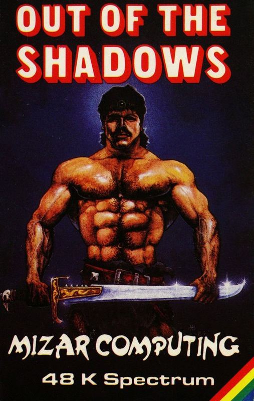
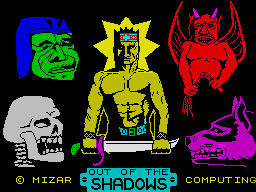
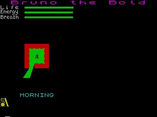

Out of the Shadows


{kind=link}

| Publisher: | Mizar Computing |
| Price: | £5.95 |
| Year: | 1984 |
| Source: | CRASH, Issue 11 |

If you are intelligent and into fantasy games (and I think the two go together no matter what some might say) then you’ll like this one.
Out of the Shadows is a game that follows in the footsteps of such notables as Black Crystal and Crusoe but like so many games reviewed this month, jumps straight to the top of the pile — for my money it is the best arcade-adventure yet. Like a pop record that grows on you, the game becomes more compelling the longer you play it. It lures you deep into a fantasy world of monsters, magic and mayhem requiring a subtle blend of technical skill and out and out battle bravado. Many have vowed to bring Dungeons and Dragons scenarios to the computer screen but surely it is to this game that fantasy devotees should now turn their attention. Here is yet another game where you are left asking yourself, how did they get it all in there?

Mizar tell me the game combines the real-time action of arcade with the freedom of exploration of adventure, and I can add, it’s an exceedingly complex yet always fascinating little masterpiece of programming. Impressive figures are fired out like computer share prices on the stock exchange. 30 commands, 500 locations, 14 different types of monster, 50 different types of object and, if a human hero is too corny for you, how about an elf or a dwarf? A unique feature of the game is the way the ground about you is illuminated by the flame from your torch or lantern, which is essential below ground or after dark. As you move around, shadows sweep across the floor in a very realistic fashion.
Themes are developed to the full in this game. When in the dungeon you must keep an eye on the level of the oil in your lantern and check how many torches you have left in case you need them. You soon discover that a lantern casts a larger light than a torch, and stand bewildered, both by your predicament and by the fine attention to detail on the part of the programmers as your last torch gradually goes out, the lighted area diminishing as the darkness closes in around you. You think you catch sight of a creature’s head popping out from around a corner and in this way you soon learn to tread carefully about shadows where monsters, who rather deviously can see in the dark, creep up on you. They are so eager to clap their teeth on you that a little squeak can sometimes betray their presence giving you just enough time for an about turn.
So what exactly does play entail?
Firstly you choose your race elf, human or dwarf. An elf is more dextrous than a human but is less strong and has fewer hit points. However, as you might expect, he wields greater spell power. A dwarf is less dextrous, is stronger, has more hit points but less spell power. After giving your character a suitably long name, you can decide upon which of the six quests you will undertake. The same quest can be attempted by different players in competition where how long the game takes each player, and how many times it’s been saved, will be the deciding factors. The permutations are extensive since on completing one quest a character, now a hero, can attempt a new quest, so you set off on a new scenario but take along the same character with his hard won possessions.

Once you have decided on your character, dungeon and quest, your character’s name is displayed above a screen which first looks quite plain, that is until you do something. A small part of the screen is illuminated on the left-hand side; this is your home from where you begin your quest and to where you must return with the object of the quest. At the centre is a special place, the central healing cross, to which you may go at any time to heal your wounds. Out of your home and into the forests your main concerns are the collecting of treasures and the slaying of monsters. Possessions such as torches and copper coins are soon amassed by opening or literally attacking the various crates and jars. These valuables and commodities can then be taken to the shop for the buying and selling of provisions, including food. Later on, when using magic, you will need the food to counteract the drain imposed by the energy-sapping spells you cast. Destroying any foes that cross your path is character building; the experience points you gain lead to increased strength, dexterity and life force, while an award of a thousand points raises your character to a new experience level. A higher level brings with it more powerful adversaries as the player delves deeper below. However, matters are complicated by the burden of ever-increasing treasures which weigh you down and make you short of breath during combat, and also, the realisation that natural healing occurs faster nearer the surface. During heavy fighting your eyes wander up to three lines indicating your Life, Energy and Breath. On the right-hand side of the screen the commentary of events scrolls upwards giving you information on what treasures you have found or how a battle is going. As you go down into deeper levels it scrolls more frantically as on every dark corner lie three or even four monsters.
INFO and LIST, which can be summoned up onto the right-hand side, are of particular interest. Checking INFO regularly gives you updates on Experience, Strength, Dexterity, Hit points, Burden, Oil and Torch Time, Injuries (e.g. Left Arm), Rooms, Treasures and Saves. LIST tells you how many of each item you have (e.g. spells, daggers, shields, torches, magic rings, ointments, etc.). The two commands that are in constant use are GO and ATTACK.
GO (or G space) E, W, SE, SW etc. moves you along the map until you cease pressing ENTER. If you now chose to attack this would be towards the last specified direction. Once devices like these are mastered the game verily flies along. Hence G space N moves you north, ENTER moves you north again while an A now would see you attacking to the north. Your chance of hitting or dodging a monster depends upon both its dexterity and yours, and the amount of damage you can inflict depends on your strength. A good tactic is to position yourself so only one monster can attack you at a time as, if given the chance, they will descend upon you from all possible directions. The maximum amount of damage you can sustain is called your hit points.
What makes the attack routine so impressive is its amazing realism. A monster once beaten off, will avoid you should you cross its path again, for example, a rat on seeing its mate slain will often run off and in its panic, fall down a hole. Even after playing a game for some time a new feature will crop up, like the time a fracas with a dragon saw my lantern knocked over plunging me into darkness. Super stuff.
As you become more adept at fighting monsters and collecting treasure you become more concerned with the quest itself which entails travelling downwards from the surface by way of stairs (which in the latter stages are always populated by monsters) or down holes where a shield might protect you from the fall. This downward progression is most reminiscent of D&D. Monsters become faster, more devious, more aggressive and inflict greater damage the lower you descend. This is reflected in the type of creatures you meet, which are of an increasingly exotic variety; rats give way to vicious skeletons followed by pernicious trolls, dragons and demons. The search for ever more precious treasures and fantastic magic keeps you forging on while rising up the experience levels gives immense satisfaction.
Out of the Shadows is an immeasurably complex game which takes some time to get to know. I wholeheartedly recommend any arcade-adventure or fantasy fans to spend some time with this game as they will be rewarded with many happy hours play.
COMMENTS
| Difficulty: | Easy to play but will take months to complete |
| Graphics: | Good, original lighting concept |
| Presentation: | Very good |
| Input facility: | Arcade response |
| Response: | Good |
| General rating: | Excellent |
| Atmosphere: | 9 |
| Vocabulary: | 8 |
| Logic: | 8 |
| Debugging: | 10 |
| Overall: | 9 |